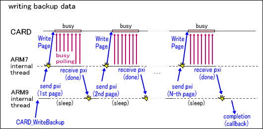

The backup device is connected to the SPI bus housed within a Nintendo DS Card. By conducting serial communication of commands through the IO register, you can perform operations such as state checks and data transfer. The type and limitations of the commands prepared depend on the device type and size, but there are features as listed below that are generally shared.
Device Types
The following are the main backup device types and their features supported by the current CARD library.| Device Types | Features |
| EEPROM | Standard feature, a relatively small amount of memory. |
| FLASH | Memory with large capacity but comparatively slow writing speed. For particularly large-capacity flash memory devices, the process of rewriting data can be somewhat complicated. |
CARD_IdentifyBackup function before any function call to backup access functions. You must follow the guidelines and make sure that ROM header information is determined in advance to prevent problems such as data being destroyed by carelessly accessing a DS Card whose details are uncertain. This is especially important for applications that are not started from a DS Card, such as in DS Download Play. Under those conditions, restrictions in the CARD library are applied automatically, and the card cannot be accessed as long as the CARD_Enable function is not called. The ROM header information for the inserted DS Card can be referenced with the CARD_GetRomHeader function.Write command that performs a simple rewrite operation cannot be used with flash memory devices above a certain capacity. To perform a rewrite operation on such devices, you must use a combination of the EraseSector operation to erase data at the sector level, and the Program operation to write data to sectors after they have been erased. | Device Types | EEPROM | FLASH | ||||||
| Size | 4 KB | 64 KB | 512 KB | 2 MB | 4 MB | 8 MB | 16 MB | 64 MB |
| Page Size | (Total Capacity) | 256 Bytes | ||||||
| Sector Size | (Total Capacity) | 65536 Bytes | ||||||
| Write (a direct write operation that does not require erasing) | Yes | Yes | No | |||||
| Program (a write operation that takes place after erasures) | No | Yes | ||||||
| EraseSector (the sector-erase operation) | No | Yes | ||||||
Flow of Access Functions
This is an explanation of the flow of operations after backup access functions are called.

CARD_CancelBackupAsync function. Because waiting for completion or requesting re-issue here sometimes take a long time for operations such as copying memory, these processes are executed by an internal thread in the CARD library instead of with the PXI interrupt handler.
CARD_GetResultCode function as a CARDResult enumerated type.
2009/04/10 Replaced symbols used in the tables with standard notation.
2008/11/27 Deleted CARD_BACKUP_TYPE_FRAM_256KBITS from the lineup of usable types.
2007/08/22 Added explanation about large-capacity FLASH devices and a table showing their characteristics.
2006/01/01 Initial version.
CONFIDENTIAL